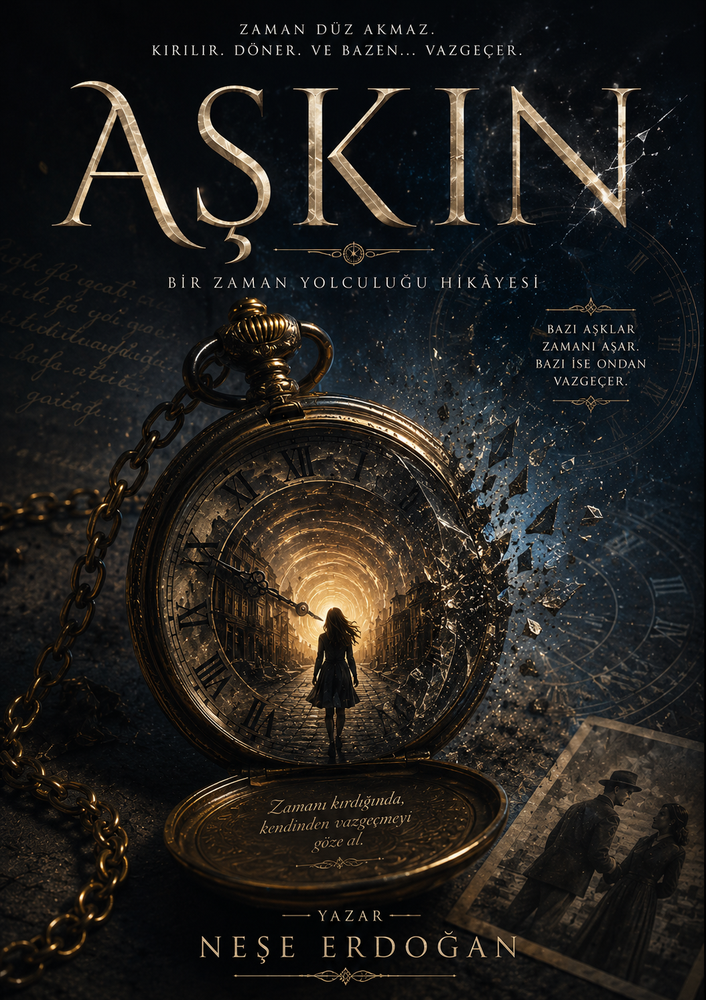

Zamana Yolculuk Romanı

Aşkın, zamanı aşan bir yolculuk hikâyesidir. Geçmiş ve gelecek arasında sıkışan karakterimiz, kaderleri değiştirmeye çalışırken büyük sırlarla yüzleşir. Ailesiyle, kendiyle, kokularıyla yeniden tanışırken, ihtimalleri görür ve birini seçmek zorunda kalır. Ama kim her şeyi seçmek varken tek bir şeyle yetinir?
Fantastik / Romantik / Bilimkurgu
Aşkın kelimesi kitabımızda bir duygu olan aşktan ziyade eski anlamıyla kullanılmıştır. Yani aşan, aşmış olan anlamındadır. Sadece bir aşk romanı bekleyenleri hayal kırıklığına uğratmak istemem. Ancak romanımız aşk kadar zamanı ve zamanda yolculuğun bir yandan açarken başka bir yandan kapattığı kapılara odaklanmaktadır. Yeni bölümler, her hafta Wattpad üzerinden yayınlanacaktır(şimdilik).